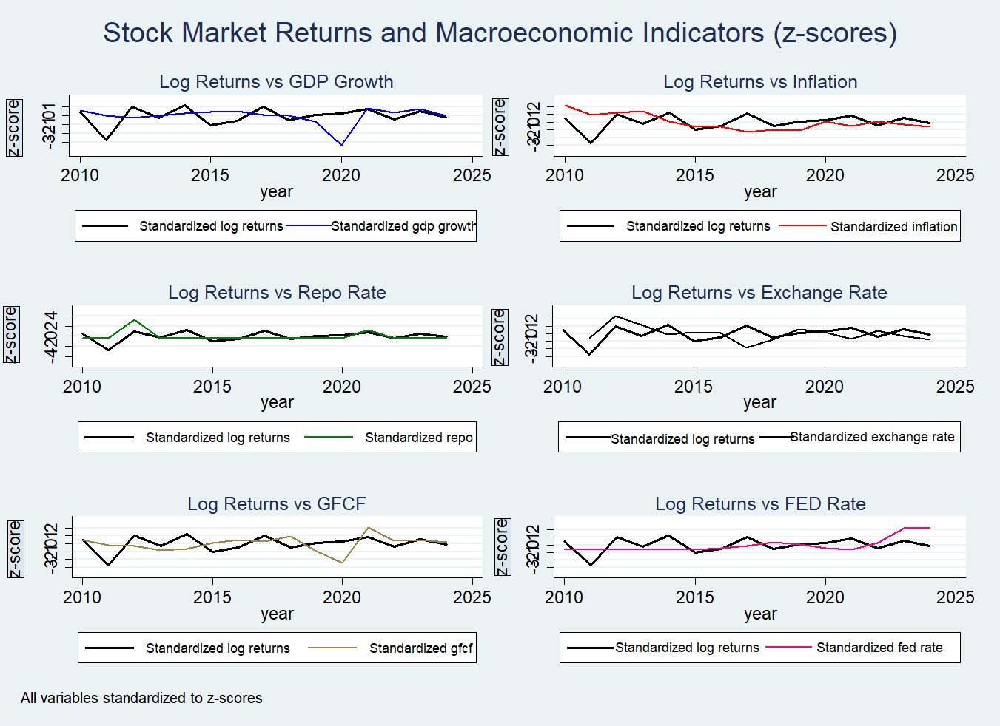
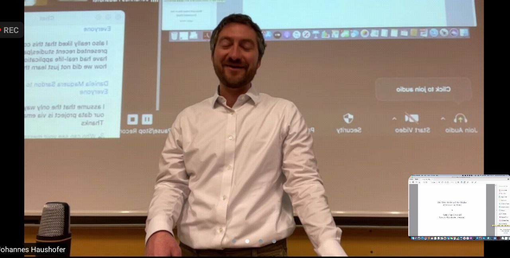
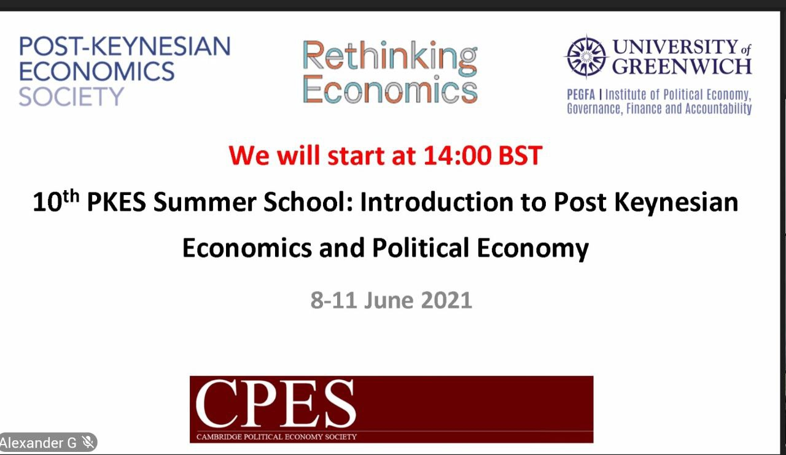
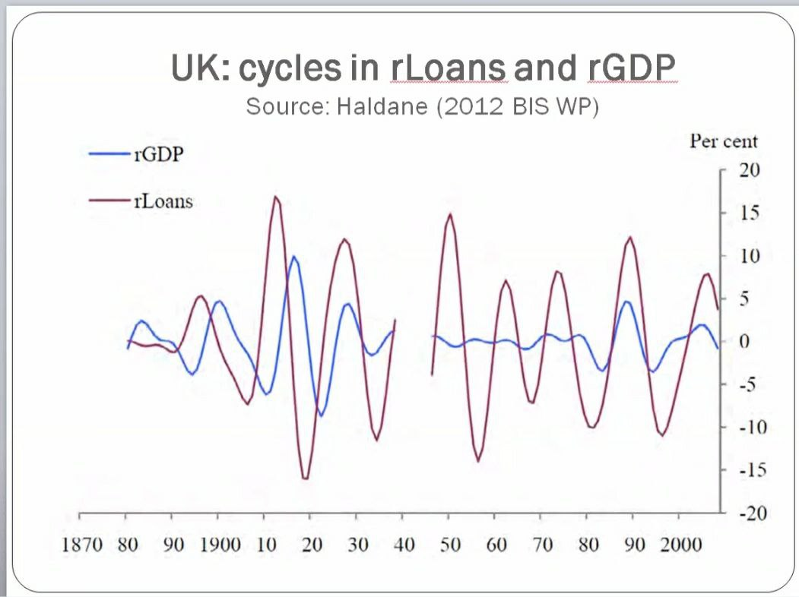
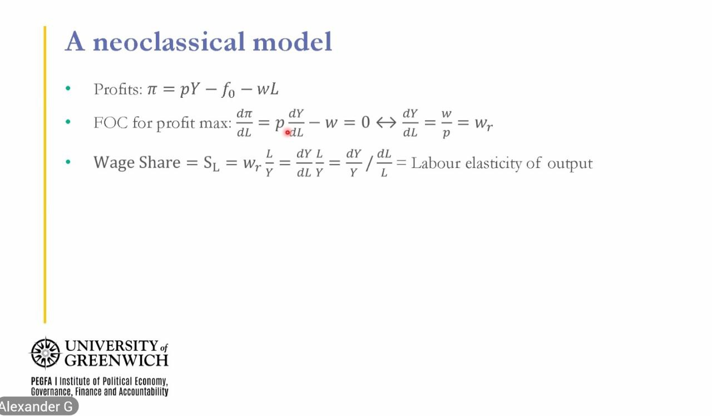

Rishabh Atray
I am currently serving as a Teaching Fellow in Economics & Public Policy at the Indian Institute of Management Tiruchirappalli and building MacroT Lab, a global research initiative addressing policy gaps in monetary and international economics. Recently, I co-organized an outreach conference with Forum Applied Macro to understand policy instruments in a fragmented world. Looking ahead, I aim to enhance forecasting models using modern analytical tools and granular datasets to generate insights that can inform evidence-based policymaking. My long-term goal is to pursue a PhD that bridges rigorous academic research with practical policy applications.
Beyond research, I enjoy playing cricket, hiking in the mountains and reading books on foreign affairs and technology.
Research interests:Monetary economics, international trade and financial markets.
Updates
| Feb 2026 | Delegation at 'India AI Summit 2026' on behalf of MacroT Lab! |
| Nov 2025 | Presented Poster at 10th IIM Ranchi Pan India World Management Conference! (Poster) |
| Sep 2025 | Attended 'Dynamic local projections with Stata' seminar through VIMM! (Materials) |
| Aug 2024 | Finished Climate Change AI Summer School sponsored by Google Deepmind! |
| Mar 2024 | Participated at Stanford University for 'Methods for Solving and Analyzing Dynamic Models'! |
| Feb 2024 | Attended Raisina Dialogue'24 and presented my poster on Supply Chain Realignment in Multipolar World! |
| Jan 2024 | Presented paper in G20 DSSSM Conference on Income Inequality Nexus! |
Experience
Sept 2023 – Present · Tiruchirappalli, Tamil Nadu, IN
Assisted faculty in 100+ sessions with courses & research activities. Conducted class participation and tabulation.
Jun 2021 - Jul 2021 · Bangalore, IN
Conducted "Lender's Analysis of Project Financial Cash Flows and Risk Assessment of Infrastructure Projects"
Mar 2017 - Jun 2017 · New Delhi, IN
Responsible for preparing research reports on child begging data for comparative study & hypothesis testing. Data collection & analysis for more than 10+ communities to show Delhi Govt for some incentives & provide education to all child beggars under Right to Education Act of India
Research
Most recent publications on Google Scholar * denotes equal contributions.

Projects
Worked under a grant of National Housing Bank (MoF) Implemented Cost, Affordability, and Financing Strategies for Green Residential Buildings in India. Conducted an in-depth analysis of over 40 banks through community surveys & engaged more than 10,000 citizens across rural and urban areas in 15 states to assess awareness and adoption of green building practices.
Collaborated with the United Nations Environment Programme UNEP to design and implement the Plastic Free Institution initiative across educational campuses in India, driving awareness and sustainable practices at scale.
Training
Undertook 5 day summer school on Deep Learning for Dynamic Stochastic Models. Attended intensive lectures & coding sessions. Participated in panel discussions highlighting the latest innovations in dynamic stochastic modeling and deep learning. (Virtual)
Undertook 2-month programme, during which I attended lectures from MIT researchers to tackle climate change with ML, AI for agri, forestry and wildlife conservation, forecasting the El Niño.

Undertook a 2-month programme, during which I attended lectures by Prof. Johannes Haushofer on Intermediate Development Economics, Cash Transfer Benefits, the Public Distribution System, and Poverty Traps.



Undertook 3-month programme, during which I attended lectures by Prof. Rafael Wildauer in Monetary Economics. Worked on Central role for 'animal spirits' in the determination of investment decisions, role of inflation, fundamentals of conventional & un-conventional policies and endogenous creation of the private banking system.
| Category | Skills |
|---|---|
| Programming | STATA, Julia, Python, EViews, LaTeX, Web Design (HTML/CSS, ReactJS) |
| Packages | Matplotlib, MacroModelling.jl, Kezdi.jl |
| Databases | CMIE, NHPD, FRED |
Proposed innovative solutions for Resilient Recovery for People & Planet, chosen among global teams.
Honored by Duayen Foundation for impactful contributions to societal research.
Recognized nationwide for outstanding academic excellence in Class X.